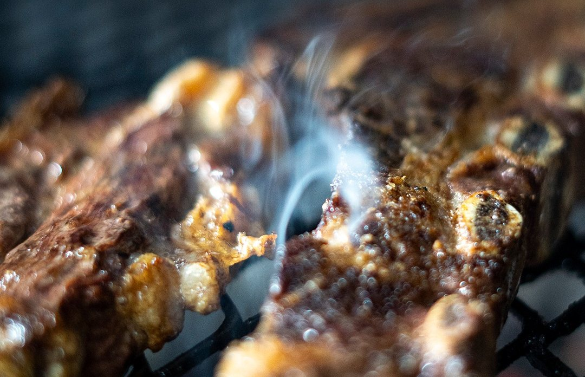
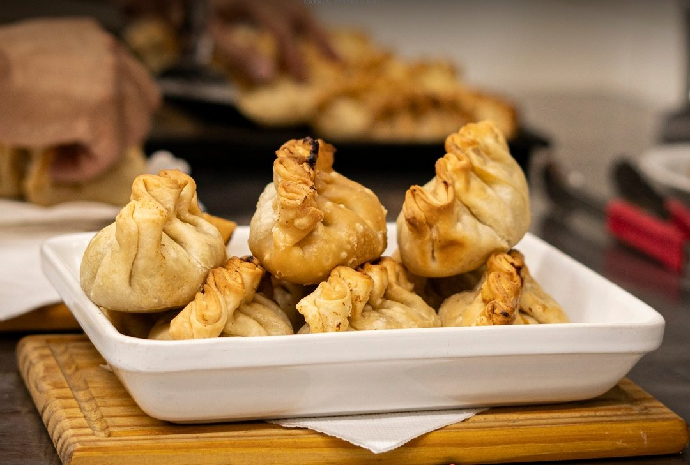
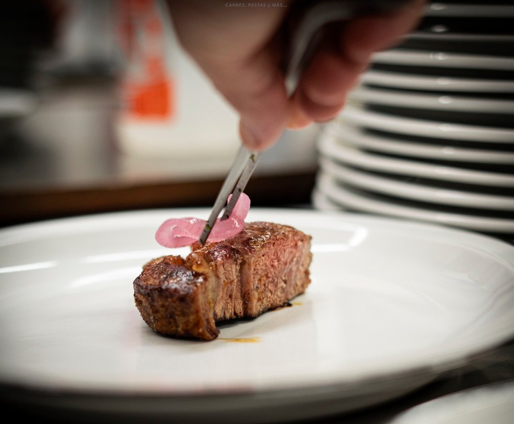
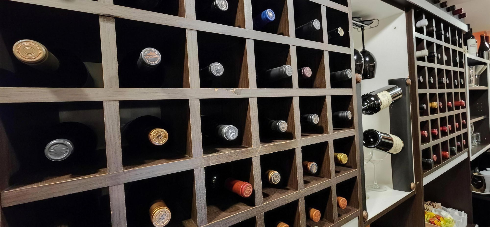

La Falda · Valle de Punilla
Carnes a la leña, pastas de la casa y una buena copa de vino
Desde 2015 en avenida España. Para venir en familia, con amigos o en pareja.
01 / 04

¡Bienvenidos!
Lugar gourmet, delicatessen y boutique de vinos. Un salón cálido, con la cocina a la vista y un deck de madera para las noches de verano.
Cuidamos la luz, el servicio y cada plato que sale de la cocina. En la carta vas a encontrar carnes a la leña, pastas totalmente caseras, trucha y salmón. Y la parrillada Blas de Rosales, que no te podés ir sin probar.
Mirá la carta completa-
Carnes a la leña
Parrilla y horno de leña. Cabrito serrano, entraña, vacío y la parrillada completa.
-
Pastas artesanales
Sorrentinos, panzotis, ñoquis y tallarines de remolacha hechos por nuestros chefs.
-
Boutique de vinos
Etiquetas de alta gama y de autor: Catena Zapata, Salentein, Rutini, Las Perdices y más.


“El vino es el abrazo de las palabras, en su justa medida…”
De nuestra carta de vinos
La especialidad de la casa
Parrillada Blas de Rosales · para dos
Empanada criolla, provoleta, chorizo, morcilla, salchicha, chinchulín, molleja, costilla de cerdo, costilla, vacío y chivito. Con papas fritas con huevo revuelto y ensalada mixta.
Y si venís con tiempo, preguntá por el cabrito serrano, al horno con vegetales o a la leña.
Reservar mesa
Detrás de cada plato
La cocina se ve desde el salón. Ahí están nuestros chefs armando cada plato, y afuera el parrillero, atento al fuego desde temprano.


Dónde estamos
-
Av. España 1320
La Falda, Córdoba -
Mediodía: todos los días, 13 a 15 h
Noche: lunes a sábado, 21 a 23 hHorarios
Reservá tu mesa
Elegí día, hora y cuántos son. Te lo mandamos armado por WhatsApp y te confirmamos por ahí.
Para llevar: elegí de la carta y llamá al 03548 15-632624. Lo retirás por nuestra cocina.





